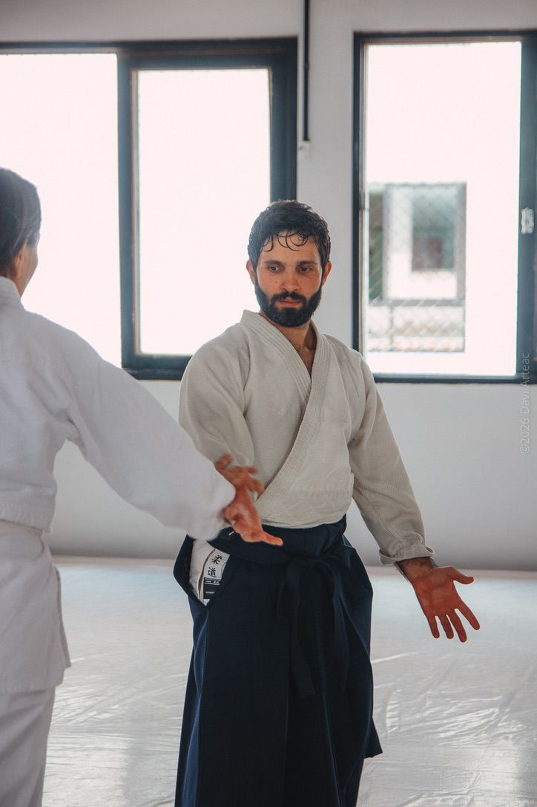
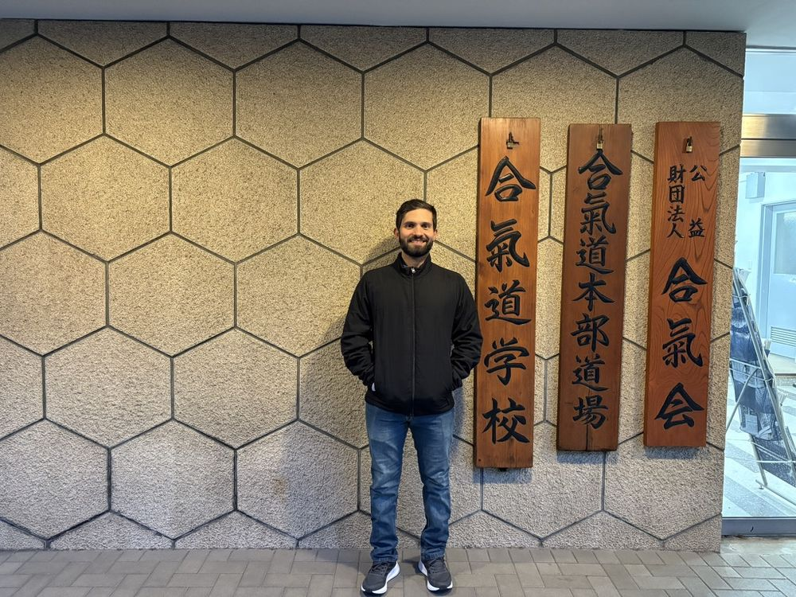

Sensei Felipe Alberto
3º Dan pela Fundação Aikikai · Instrutor responsável
Mais de 19 anos de prática dedicados ao Aikido. À frente do Mokusai Dojo, sua trajetória é marcada pela dedicação e pela busca constante pelo refinamento técnico.
Realizou uma temporada de imersão no Hombu Dojo, em Tóquio — o dojo central do Aikido mundial — e enriqueceu sua formação treinando no tatame com referências internacionais da arte, como Seki Shihan, Miyamoto Shihan, Osawa Shihan, Kanazawa Shihan e Stephane Goffin Sensei, entre outros.
